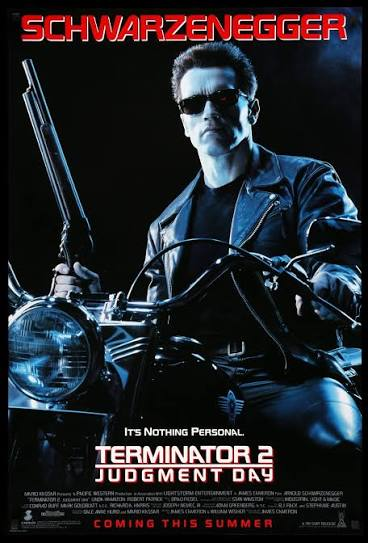
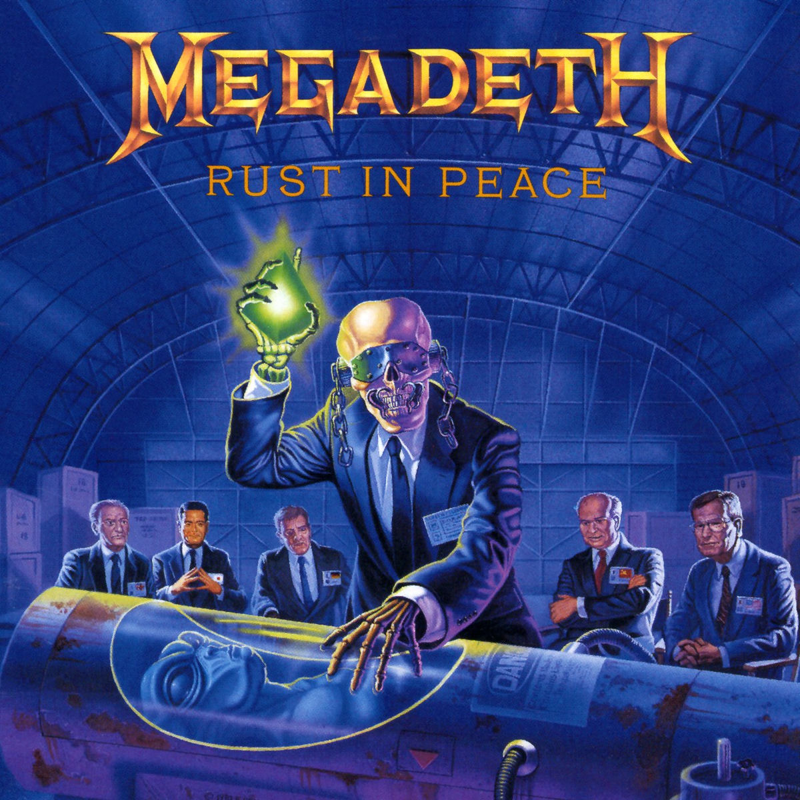
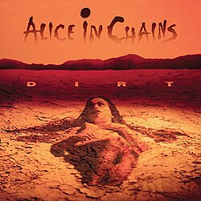
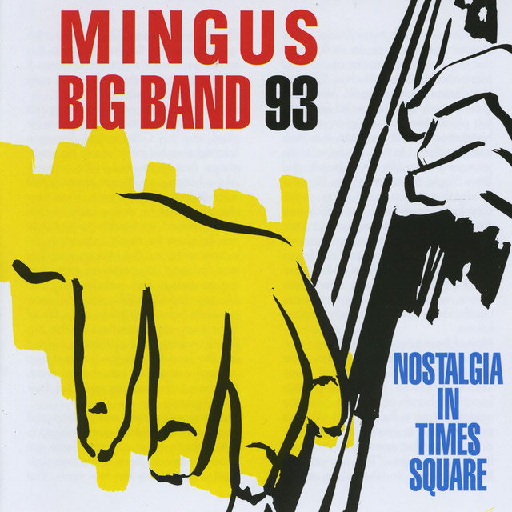

PLAYER 05 // READY
Matias
// Habilidades técnicas (skills)
Java / Spring
0%
Mainframe (COBOL)
0%
Backend
0%
Ingeniería de Software
0%
// Terminal Mainframe (interacción propia)
> Sistema listo. Elegí un comando.
// Películas favoritas
Matrix
1999 · Ciencia ficción

Terminator 2: Judgment Day
1991 · Acción / Ciencia ficción
Forrest Gump
1994 · Drama
// Discos favoritos

Rust in Peace
Megadeth · 1990

Dirt
Alice in Chains · 1992

Nostalgia in Times Square
Mingus Big Band · 1993